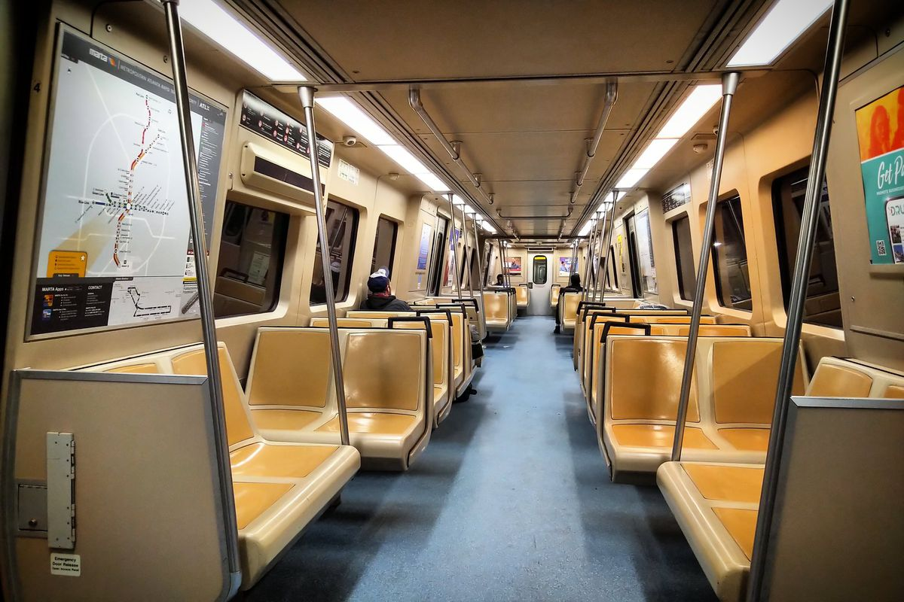
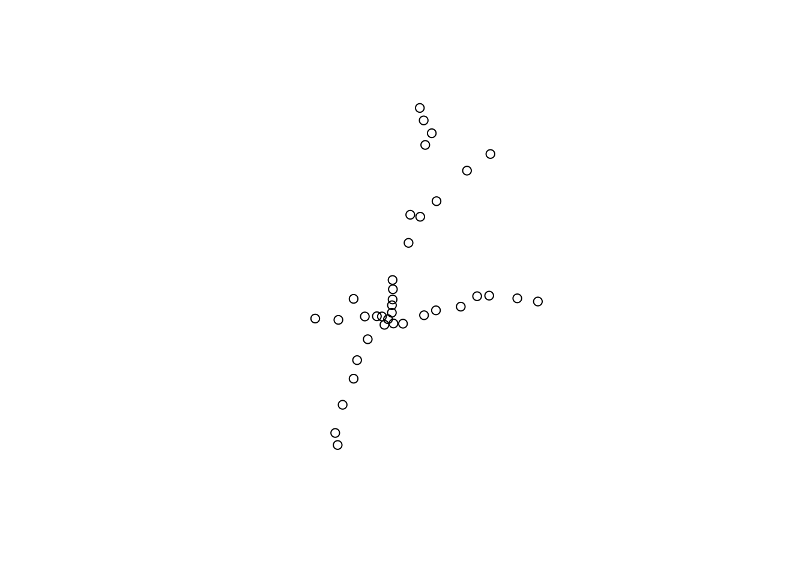
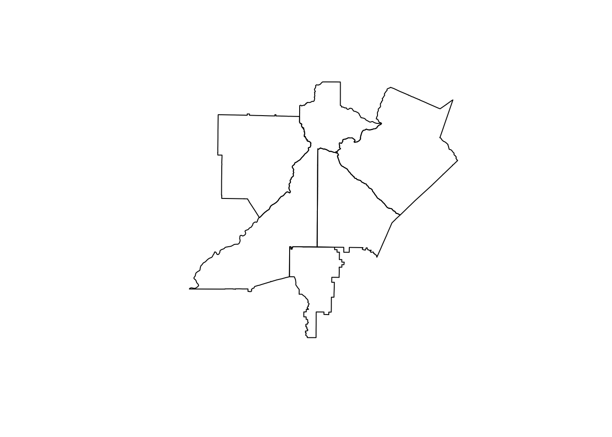
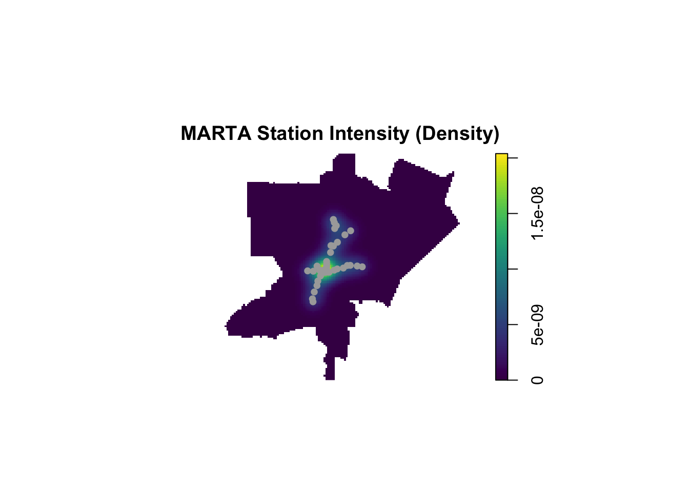
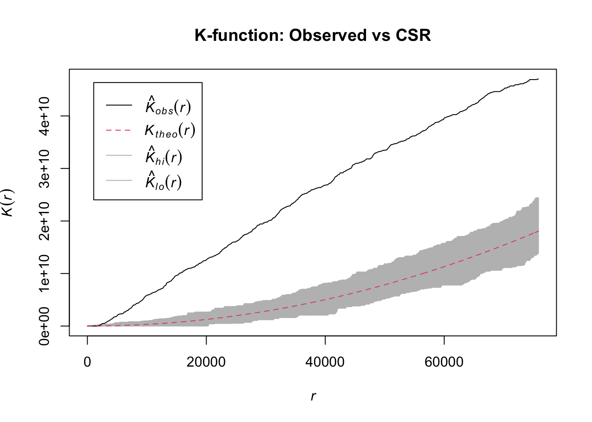

DSAN 6750 / PPOL 6805: GIS for Spatial Data Science
Author
Affiliation
Noelle Martell
Georgetown University

Introduction
In the 1970s, as Atlanta’s transit system sought suburban expansion, a Cobb County commissioner promised to “stock the Chattahoochee with piranha” to keep MARTA out. Bumper stickers declared “Share Atlanta Crime — Support MARTA.” This was not rhetoric but policy. Decades of suburban resistance rooted in racial fear shaped a transit system that remains confined to this day.
Metro Atlanta is one of few major U.S. cities whose transit never became regional. While Washington’s Metro and San Francisco’s BART extended into suburbs, MARTA stopped at Fulton and DeKalb county lines. Cobb and Gwinnett have zero stations after repeatedly rejecting the system when predominantly white. Clayton County tells the clearest story: 95% white in 1970, residents rejected MARTA overwhelmingly. By 2014, with the population 70% Black, Clayton voted to join.
The Atlanta Journal-Constitution’s “Riding the Color Line” investigation documented this history through referendum records and rider experiences. MARTA was essential to Black working-class Atlantans while constrained by white suburban fears. From its inception, the system’s geography was defined by race as much as ridership.
This project tests whether MARTA’s spatial distribution reflects that history. I examine whether station placement correlates systematically with racial demographics beyond what population density or employment patterns would predict. Using point pattern analysis and Monte Carlo simulations, I test if the observed configuration differs significantly from random or population-proportional distribution.
Literature Review
Spatial mismatch describes the geographic disconnection between where low-income populations reside and where employment opportunities exist. Kain (1992) demonstrated that residential segregation affects employment locations for Black workers and that proximity to jobs influences labor market participation. When transit infrastructure fails to bridge these spatial gaps, economic barriers compound.
American transit systems reflect the political context of their creation. Most were established during the 1960s and 1970s, when urban cores were associated with Black populations and decline while suburbs represented white prosperity and growth (Kinder Institute for Urban Research, n.d.; National Public Radio 2020). Transit agencies confronted dual mandates: preventing the collapse of urban bus systems serving predominantly Black riders while addressing highway congestion affecting suburban white commuters. The infrastructure that emerged served these populations through distinct modes and service levels. Commuter rail moved suburban residents quickly past urban neighborhoods. Local bus service operated on different schedules with different fare structures. The result was two parallel networks serving fundamentally different constituencies.
Planning decisions implemented and reinforced segregation (National Public Radio 2020). Highway construction demolished Black neighborhoods to create corridors for suburban commuters. Transit route selection determined which communities received service and which remained isolated. Though framed through ostensibly neutral concerns about crime, property values, or congestion, these decisions were often explicitly racial in motivation. Suggs (2025) documented this pattern in Atlanta, where referendum campaigns against MARTA expansion used overtly racial rhetoric and suburban counties voted along demographic lines. Contemporary research shows these patterns persist (Kinder Institute for Urban Research, n.d.). Communities of color experience disproportionate exposure to pollution from transportation infrastructure while receiving fewer mobility benefits. Transit-dependent populations face longer commute times despite traveling shorter distances.
Federal law mandates equity analyses for transportation projects through Title VI of the Civil Rights Act, yet implementation has proven inadequate. When suburban jurisdictions reject regional transit expansion, urban populations experience spatial isolation from employment centers. Most research examining transit equity assumes systems develop through technical planning criteria even when distributions reveal racial disparities. Few studies combine historical documentation of discriminatory decision-making with spatial statistical analysis to measure the persistence of exclusionary patterns in contemporary infrastructure. This gap leaves open the question of whether observed inequalities result from neutral planning constraints or reflect deliberate political choices that continue structuring metropolitan access decades later.
Methodology
Data Sources
This analysis uses three primary data sources: MARTA rail station locations from the Atlanta Regional Commission, demographic data from the 2020 American Community Survey via the U.S. Census Bureau, and county boundary files. All spatial data are projected to a common coordinate system (WGS84) to enable consistent analysis.
── Conflicts ────────────────────────────────────────── tidyverse_conflicts() ──
✖ dplyr::collapse() masks nlme::collapse()
✖ dplyr::filter() masks stats::filter()
✖ dplyr::lag() masks stats::lag()
ℹ Use the conflicted package (<http://conflicted.r-lib.org/>) to force all conflicts to become errors
Code
library(ggplot2)library(viridis)
Loading required package: viridisLite
Code
library(spdep)
Loading required package: spData
To access larger datasets in this package, install the spDataLarge
package with: `install.packages('spDataLarge',
repos='https://nowosad.github.io/drat/', type='source')`
Code
library(mapview)
Code
# set census api key# census_api_key("adbacbf3a6d334a6f389133691644ac59760e6b2", install = TRUE)# check working directory and list filesgetwd()
# load marta station datamarta_stations <-read_csv("MARTA_Rail_Stations_-1706175048887107171.csv")
Rows: 38 Columns: 13
── Column specification ────────────────────────────────────────────────────────
Delimiter: ","
chr (8): Station, Station Code, Web Address, Parking, Street Address, City, ...
dbl (5): OBJECTID, Parking Spaces, Zip Code, x, y
ℹ Use `spec()` to retrieve the full column specification for this data.
ℹ Specify the column types or set `show_col_types = FALSE` to quiet this message.
Code
head(marta_stations)
# A tibble: 6 × 13
OBJECTID Station `Station Code` `Web Address` `Parking Spaces` Parking
<dbl> <chr> <chr> <chr> <dbl> <chr>
1 1 Decatur E6 https://www.… 0 No
2 2 Avondale E7 https://www.… 734 Yes
3 3 Chamblee NE9 https://www.… 1149 Yes
4 4 Lakewood-Ft. M… S4 https://www.… 1048 Yes
5 5 Oakland City S3 https://www.… 443 Yes
6 6 West End S2 https://www.… 472 Yes
# ℹ 7 more variables: `Street Address` <chr>, City <chr>, `Zip Code` <dbl>,
# GlobalID <chr>, LABEL <chr>, x <dbl>, y <dbl>
# convert to spatial object (sf)marta_sf <-st_as_sf(marta_stations, coords =c("x", "y"), crs =2240) # Georgia State Plane West coordinate system# transform to standard lat/long (WGS84)marta_sf <-st_transform(marta_sf, crs =4326)# check itprint(marta_sf)
Simple feature collection with 38 features and 11 fields
Geometry type: POINT
Dimension: XY
Bounding box: xmin: -84.47044 ymin: 33.64068 xmax: -84.22966 ymax: 33.94382
Geodetic CRS: WGS 84
# A tibble: 38 × 12
OBJECTID Station `Station Code` `Web Address` `Parking Spaces` Parking
* <dbl> <chr> <chr> <chr> <dbl> <chr>
1 1 Decatur E6 https://www.… 0 No
2 2 Avondale E7 https://www.… 734 Yes
3 3 Chamblee NE9 https://www.… 1149 Yes
4 4 Lakewood-Ft. … S4 https://www.… 1048 Yes
5 5 Oakland City S3 https://www.… 443 Yes
6 6 West End S2 https://www.… 472 Yes
7 7 Arts Center N5 https://www.… 33 Yes
8 8 Lindbergh Cen… N6 https://www.… 2519 Yes
9 9 Kensington E8 https://www.… 1962 Yes
10 10 Georgia State E1 https://www.… 0 No
# ℹ 28 more rows
# ℹ 6 more variables: `Street Address` <chr>, City <chr>, `Zip Code` <dbl>,
# GlobalID <chr>, LABEL <chr>, geometry <POINT [°]>
Code
plot(st_geometry(marta_sf))

Code
# get county boundaries for metro atlanta countiesoptions(tigris_use_cache =TRUE)counties <-counties(state ="GA", cb =TRUE)
Retrieving data for the year 2024
Code
# filter to just the 5 core metro countiesmetro_counties <- counties %>%filter(NAME %in%c("Fulton", "DeKalb", "Cobb", "Gwinnett", "Clayton"))# transform to same coordinate system as MARTA stationsmetro_counties <-st_transform(metro_counties, crs =4326)# check itprint(metro_counties)
Simple feature collection with 5 features and 12 fields
Geometry type: MULTIPOLYGON
Dimension: XY
Bounding box: xmin: -84.85116 ymin: 33.35246 xmax: -83.7991 ymax: 34.18629
Geodetic CRS: WGS 84
STATEFP COUNTYFP COUNTYNS GEOIDFQ GEOID NAME NAMELSAD
1 13 121 01694833 0500000US13121 13121 Fulton Fulton County
2 13 067 01686112 0500000US13067 13067 Cobb Cobb County
3 13 089 01687424 0500000US13089 13089 DeKalb DeKalb County
4 13 135 01688166 0500000US13135 13135 Gwinnett Gwinnett County
5 13 063 01672399 0500000US13063 13063 Clayton Clayton County
STUSPS STATE_NAME LSAD ALAND AWATER geometry
1 GA Georgia 06 1364484194 20639636 MULTIPOLYGON (((-84.84913 3...
2 GA Georgia 06 879793162 12036674 MULTIPOLYGON (((-84.73968 3...
3 GA Georgia 06 693251647 8848778 MULTIPOLYGON (((-84.34984 3...
4 GA Georgia 06 1116612133 15692560 MULTIPOLYGON (((-84.27709 3...
5 GA Georgia 06 367009134 6914194 MULTIPOLYGON (((-84.45855 3...
Code
plot(st_geometry(metro_counties))

Analytical Approach
Point pattern analysis treats station locations as a spatial point process, examining both density across space and clustering patterns. Stations are converted to a point pattern object within a five-county study window using Georgia State Plane coordinates for distance-based calculations.
Three complementary methods test the spatial configuration. Correlation analysis examines relationships between census tract demographics and station proximity. Moran’s I tests for spatial autocorrelation in demographic patterns and transit access. Monte Carlo simulation (999 iterations) compares the observed configuration against Complete Spatial Randomness, generating an envelope of expected patterns under random placement.
Census tract-level demographic data provides the racial composition needed to test whether station proximity correlates with demographics. The 2020 American Community Survey 5-year estimates offer the most recent comprehensive data at this geographic scale.
Code
# get demographic data from census (2020 ACS 5-year estimates)ga_demographics <-get_acs(geography ="tract",variables =c(total_pop ="B02001_001", white ="B02001_002", black ="B02001_003" ),state ="GA",county =c("Fulton", "DeKalb", "Cobb", "Gwinnett", "Clayton"),year =2020,geometry =TRUE,output ="wide")
Formal statistical testing determines whether observed patterns could result from chance or neutral planning criteria. Point pattern analysis requires converting station locations from geographic coordinates to a planar coordinate system and defining a study area boundary.
Point Pattern Analysis
Code
# transform to projected coordinate system marta_projected <-st_transform(marta_sf, crs =2240)metro_counties_projected <-st_transform(metro_counties, crs =2240)# create study area window from projected countiesstudy_window <-st_union(metro_counties_projected) %>%st_as_sf() %>%as.owin()# extract coordinates from projected marta stationsmarta_coords <-st_coordinates(marta_projected)# create point pattern object (ppp)marta_ppp <-ppp(x = marta_coords[,1],y = marta_coords[,2],window = study_window)# checkprint(marta_ppp)
Planar point pattern: 38 points
window: polygonal boundary
enclosing rectangle: [2087952.4, 2408071.9] x [1219517.5, 1522883.6] units
Code
# calculate intensity (station density)marta_intensity <-density(marta_ppp, sigma =10000)# visualize intensityplot(marta_intensity, main ="MARTA Station Intensity (Density)",col = viridis::viridis(100))plot(marta_ppp, add =TRUE, col ="darkgray", pch =19, cex =0.8)

Correlation Analysis
Code
# calculate distance from each tract centroid to nearest marta stationtract_centroids <-st_centroid(ga_demographics)
Warning: st_centroid assumes attributes are constant over geometries
Code
# calculate distance to nearest station (in meters)distances <-st_distance(tract_centroids, marta_sf)min_distance <-apply(distances, 1, min)# add to demographics dataga_demographics$dist_to_station <-as.numeric(min_distance)# create binary: has station within 1 mile (1609 meters)ga_demographics$has_nearby_station <-ifelse(ga_demographics$dist_to_station <1609, 1, 0)# correlation: % black vs distance to stationcor_black_distance <-cor(ga_demographics$pct_black, ga_demographics$dist_to_station, use ="complete.obs")# correlation: % white vs distance to station cor_white_distance <-cor(ga_demographics$pct_white, ga_demographics$dist_to_station,use ="complete.obs")# print resultsprint(paste("Correlation between % Black and distance to station:", round(cor_black_distance, 3)))
[1] "Correlation between % Black and distance to station: -0.199"
Code
print(paste("Correlation between % White and distance to station:", round(cor_white_distance, 3)))
[1] "Correlation between % White and distance to station: 0.175"
Warning: st_centroid assumes attributes are constant over geometries
Code
neighbors <-knn2nb(knearneigh(coords, k =8))weights <-nb2listw(neighbors, style ="W")# calculate moran's I for % black populationmorans_black <-moran.test(ga_demographics_clean$pct_black, weights)print(morans_black)
Moran I test under randomisation
data: ga_demographics_clean$pct_black
weights: weights
Moran I statistic standard deviate = 54.99, p-value < 2.2e-16
alternative hypothesis: greater
sample estimates:
Moran I statistic Expectation Variance
0.8303966599 -0.0009980040 0.0002285814
Code
# calculate moran's I for distance to stationmorans_distance <-moran.test(ga_demographics_clean$dist_to_station, weights)print(morans_distance)
Moran I test under randomisation
data: ga_demographics_clean$dist_to_station
weights: weights
Moran I statistic standard deviate = 64.367, p-value < 2.2e-16
alternative hypothesis: greater
sample estimates:
Moran I statistic Expectation Variance
0.9716846571 -0.0009980040 0.0002283597
Monte Carlo Simulations
Code
# monte carlo simulation: complete spatial randomness (CSR)# simulate 999 random placements of 38 stationsset.seed(123) # for reproducibility# run csr simulationcsr_simulation <-envelope(marta_ppp, fun = Kest, nsim =999, verbose =FALSE)# plot resultsplot(csr_simulation, main ="K-function: Observed vs CSR")

Code
# population-proportional test# test if stations correlate with population densitycor_pop_stations <-cor(ga_demographics_clean$total_popE, ga_demographics_clean$has_nearby_station,use ="complete.obs")print(paste("Correlation between population and nearby station:", round(cor_pop_stations, 3)))
[1] "Correlation between population and nearby station: -0.265"
Results
Spatial Distribution
MARTA’s 38 stations concentrate in two counties: Fulton (27 stations, 71%), DeKalb (10 stations, 26%), and Clayton (1 station). Cobb and Gwinnett have zero stations. Counties with service average higher Black populations: Clayton 70.7%, DeKalb 47.2%, Fulton 41.3%. Counties without service have lower Black populations: Gwinnett 27.8%, Cobb 27.3%.
Correlation Analysis
Across 1,006 census tracts, higher Black populations correlate with closer station proximity (r = -0.199, p < 0.001). White populations show the reverse: higher percentages correlate with greater distance (r = 0.175, p < 0.001). Population density correlates negatively with access (r = -0.265), contradicting population-proportional planning.
Spatial Clustering
Moran’s I reveals strong spatial autocorrelation for Black population (I = 0.830, p < 0.001) and extreme clustering for distance to stations (I = 0.972, p < 0.001). Monte Carlo simulations (999 iterations) tested random placement. The observed K-function falls outside the simulation envelope at all distances (p < 0.01), ruling out chance as an explanation.
MARTA concentrates in areas with higher Black populations. Population density does not predict access. The configuration differs significantly from both random and population-proportional distribution.
Discussion
The results quantify what MARTA’s history suggested. Population fails to explain where stations are, ruling out the most straightforward neutral planning explanation. The extreme spatial clustering at Fulton and DeKalb county boundaries, precisely where Cobb and Gwinnett rejected expansion, demonstrates that political geography structures MARTA’s footprint rather than transportation logic. Monte Carlo testing confirms this configuration could not arise randomly.
Statistical significance translates to lived experience for MARTA riders. The 90-minute commutes documented by Suggs (2025) are not transit inefficiency but the measurable outcome of referendum decisions. When spatial autocorrelation approaches 1.0 for MARTA access, it means some Atlanta communities have regional mobility while others face systematic isolation.
This work bridges two types of evidence about MARTA’s development. Journalism documented explicit resistance and its mechanisms through referendum campaigns. Spatial analysis measures its persistence in the current system. The convergence matters: MARTA’s inequitable distribution is not incidental but reflects political choices that remain embedded in metropolitan infrastructure decades later.
Conclusion
MARTA’s spatial pattern confirms what the promise to “stock the Chattahoochee with piranha” really meant: political resistance to racial integration that continues to shape infrastructure today. The extreme clustering at county boundaries where referendums occurred provides measurable evidence of how those decisions persist in limiting metropolitan access.
This is not Atlanta’s problem alone. Transit systems across the United States bear similar marks (Kinder Institute for Urban Research, n.d.; National Public Radio 2020). The dual mandates of the 1960s-1980s produced infrastructure that reinforced segregation under claims of technical necessity. What happened in Cobb and Gwinnett happened in suburbs nationwide. The mechanisms differ, the outcome repeats: transit confined by racial boundaries rather than connecting communities.
Spatial data science provides tools to measure what has long been documented through lived experience and journalism. GIS quantifies inequality embedded in infrastructure, making visible what political rhetoric obscured. The statistical significance matters because it transforms claims into evidence, anecdotes into patterns, history into measurable present-day consequences.
Change requires acknowledgment. As Kinder Institute for Urban Research (n.d.) notes, addressing transportation inequity begins with recognizing how racism shaped these systems. The AJC investigation documented MARTA’s history. This analysis demonstrates that history persists in current spatial patterns. Stories like “Riding the Color Line” combined with quantitative evidence create accountability. When journalism names the mechanisms and spatial analysis proves their persistence, the ground shifts. What can be measured can be changed.
Undoing what has been built, both consciously and unconsciously, takes sustained effort. But transformation becomes possible when evidence makes denial untenable. Metropolitan Atlanta’s transit future need not replicate its past, but only if planning acknowledges how political decisions from the civil rights era continue structuring who can access employment, education, and opportunity across the region today.
Limitations: This analysis establishes statistical patterns but cannot prove causation through spatial methods alone. Converging evidence from historical documentation, demographic timing, and statistical testing provides strong support for racial geography structuring MARTA’s distribution.
Future Research: Similar analyses of transit systems with documented exclusion could test whether these patterns represent broader national phenomena. Incorporating employment data could refine spatial mismatch measurement. Examining proposed expansions could reveal whether contemporary planning challenges or reproduces historical exclusion.
---title: "Riding the Color Line: A Spatial Analysis of MARTA Distribution and Racial Segregation in Metro Atlanta"subtitle: "DSAN 6750 / PPOL 6805: GIS for Spatial Data Science"author: - name: Noelle Martell affiliation: Georgetown Universityformat: html: toc: true toc-location: left code-fold: true code-tools: true theme: cosmo css: custom.cssbibliography: references.bib---# Introduction---In the 1970s, as Atlanta's transit system sought suburban expansion, a Cobb County commissioner promised to "stock the Chattahoochee with piranha" to keep MARTA out. Bumper stickers declared "Share Atlanta Crime — Support MARTA." This was not rhetoric but policy. Decades of suburban resistance rooted in racial fear shaped a transit system that remains confined to this day.::: {layout-ncol=2}::: {#text-column}Metro Atlanta is one of few major U.S. cities whose transit never became regional. While Washington's Metro and San Francisco's BART extended into suburbs, MARTA stopped at Fulton and DeKalb county lines. Cobb and Gwinnett have zero stations after repeatedly rejecting the system when predominantly white. Clayton County tells the clearest story: 95% white in 1970, residents rejected MARTA overwhelmingly. By 2014, with the population 70% Black, Clayton voted to join.<br>The Atlanta Journal-Constitution's "Riding the Color Line" investigation documented this history through referendum records and rider experiences. MARTA was essential to Black working-class Atlantans while constrained by white suburban fears. From its inception, the system's geography was defined by race as much as ridership.::::::This project tests whether MARTA's spatial distribution reflects that history. I examine whether station placement correlates systematically with racial demographics beyond what population density or employment patterns would predict. Using point pattern analysis and Monte Carlo simulations, I test if the observed configuration differs significantly from random or population-proportional distribution.# Literature Review---Spatial mismatch describes the geographic disconnection between where low-income populations reside and where employment opportunities exist. @kain1992 demonstrated that residential segregation affects employment locations for Black workers and that proximity to jobs influences labor market participation. When transit infrastructure fails to bridge these spatial gaps, economic barriers compound.American transit systems reflect the political context of their creation. Most were established during the 1960s and 1970s, when urban cores were associated with Black populations and decline while suburbs represented white prosperity and growth [@kinder; @npr2020]. Transit agencies confronted dual mandates: preventing the collapse of urban bus systems serving predominantly Black riders while addressing highway congestion affecting suburban white commuters. The infrastructure that emerged served these populations through distinct modes and service levels. Commuter rail moved suburban residents quickly past urban neighborhoods. Local bus service operated on different schedules with different fare structures. The result was two parallel networks serving fundamentally different constituencies.Planning decisions implemented and reinforced segregation [@npr2020]. Highway construction demolished Black neighborhoods to create corridors for suburban commuters. Transit route selection determined which communities received service and which remained isolated. Though framed through ostensibly neutral concerns about crime, property values, or congestion, these decisions were often explicitly racial in motivation. @suggs2025 documented this pattern in Atlanta, where referendum campaigns against MARTA expansion used overtly racial rhetoric and suburban counties voted along demographic lines. Contemporary research shows these patterns persist [@kinder]. Communities of color experience disproportionate exposure to pollution from transportation infrastructure while receiving fewer mobility benefits. Transit-dependent populations face longer commute times despite traveling shorter distances.Federal law mandates equity analyses for transportation projects through Title VI of the Civil Rights Act, yet implementation has proven inadequate. When suburban jurisdictions reject regional transit expansion, urban populations experience spatial isolation from employment centers. Most research examining transit equity assumes systems develop through technical planning criteria even when distributions reveal racial disparities. Few studies combine historical documentation of discriminatory decision-making with spatial statistical analysis to measure the persistence of exclusionary patterns in contemporary infrastructure. This gap leaves open the question of whether observed inequalities result from neutral planning constraints or reflect deliberate political choices that continue structuring metropolitan access decades later.# Methodology ---## Data SourcesThis analysis uses three primary data sources: MARTA rail station locations from the Atlanta Regional Commission, demographic data from the 2020 American Community Survey via the U.S. Census Bureau, and county boundary files. All spatial data are projected to a common coordinate system (WGS84) to enable consistent analysis.```{r}# installing packages # install.packages(c("sf", "tidycensus", "tigris", "spatstat", #"tidyverse", "ggplot2", "viridis", "spdep", "mapview"))# loading packageslibrary(sf)library(tidycensus)library(tigris)library(spatstat)library(tidyverse)library(ggplot2)library(viridis)library(spdep)library(mapview)``````{r}# set census api key# census_api_key("adbacbf3a6d334a6f389133691644ac59760e6b2", install = TRUE)# check working directory and list filesgetwd()list.files()``````{r}# load marta station datamarta_stations <-read_csv("MARTA_Rail_Stations_-1706175048887107171.csv")head(marta_stations)names(marta_stations)glimpse(marta_stations)``````{r}# convert to spatial object (sf)marta_sf <-st_as_sf(marta_stations, coords =c("x", "y"), crs =2240) # Georgia State Plane West coordinate system# transform to standard lat/long (WGS84)marta_sf <-st_transform(marta_sf, crs =4326)# check itprint(marta_sf)plot(st_geometry(marta_sf))``````{r}# get county boundaries for metro atlanta countiesoptions(tigris_use_cache =TRUE)counties <-counties(state ="GA", cb =TRUE)# filter to just the 5 core metro countiesmetro_counties <- counties %>%filter(NAME %in%c("Fulton", "DeKalb", "Cobb", "Gwinnett", "Clayton"))# transform to same coordinate system as MARTA stationsmetro_counties <-st_transform(metro_counties, crs =4326)# check itprint(metro_counties)plot(st_geometry(metro_counties))```### Analytical ApproachPoint pattern analysis treats station locations as a spatial point process, examining both density across space and clustering patterns. Stations are converted to a point pattern object within a five-county study window using Georgia State Plane coordinates for distance-based calculations.Three complementary methods test the spatial configuration. Correlation analysis examines relationships between census tract demographics and station proximity. Moran's I tests for spatial autocorrelation in demographic patterns and transit access. Monte Carlo simulation (999 iterations) compares the observed configuration against Complete Spatial Randomness, generating an envelope of expected patterns under random placement.# Exploratory Data Analysis (EDA)---## Spatial Distribution```{r}# interactive map: counties and stationsmapview(metro_counties, col.regions ="lightgray", alpha.regions =0.5, layer.name ="Counties", map.types ="CartoDB.Positron") +mapview(marta_sf, col.regions ="lightgray", color ="darkgray", cex =5, lwd =2, layer.name ="MARTA Stations")```## Demographic PatternsCensus tract-level demographic data provides the racial composition needed to test whether station proximity correlates with demographics. The 2020 American Community Survey 5-year estimates offer the most recent comprehensive data at this geographic scale.```{r}# get demographic data from census (2020 ACS 5-year estimates)ga_demographics <-get_acs(geography ="tract",variables =c(total_pop ="B02001_001", white ="B02001_002", black ="B02001_003" ),state ="GA",county =c("Fulton", "DeKalb", "Cobb", "Gwinnett", "Clayton"),year =2020,geometry =TRUE,output ="wide")# calculate percentagesga_demographics <- ga_demographics %>%mutate(pct_white = (whiteE / total_popE) *100,pct_black = (blackE / total_popE) *100 ) %>%st_transform(crs =4326)# previewglimpse(ga_demographics)``````{r}# interactive choropleth: % black population with marta stationsmapview(ga_demographics, zcol ="pct_black", col.regions = viridis::viridis(100),alpha.regions =0.7,layer.name ="% Black Population",map.types ="CartoDB.Positron") +mapview(metro_counties, col.regions =NA, color ="darkgray", alpha.regions =0, lwd =2, layer.name ="Counties") +mapview(marta_sf, col.regions ="lightgray", color ="darkgray", cex =5, lwd =2, layer.name ="MARTA Stations")```## Descriptive Statistics```{r}# count stations per countystations_per_county <- marta_sf %>%st_join(metro_counties) %>%st_drop_geometry() %>%group_by(NAME) %>%summarise(n_stations =n()) %>%arrange(desc(n_stations))print(stations_per_county)``````{r}# average demographics by countycounty_demographics <- ga_demographics %>%st_join(metro_counties %>%select(county_name = NAME)) %>%st_drop_geometry() %>%group_by(county_name) %>%summarise(avg_pct_black =mean(pct_black, na.rm =TRUE),avg_pct_white =mean(pct_white, na.rm =TRUE),n_tracts =n() ) %>%arrange(desc(avg_pct_black))print(county_demographics)```# Hypothesis Testing---Formal statistical testing determines whether observed patterns could result from chance or neutral planning criteria. Point pattern analysis requires converting station locations from geographic coordinates to a planar coordinate system and defining a study area boundary.## Point Pattern Analysis```{r}# transform to projected coordinate system marta_projected <-st_transform(marta_sf, crs =2240)metro_counties_projected <-st_transform(metro_counties, crs =2240)# create study area window from projected countiesstudy_window <-st_union(metro_counties_projected) %>%st_as_sf() %>%as.owin()# extract coordinates from projected marta stationsmarta_coords <-st_coordinates(marta_projected)# create point pattern object (ppp)marta_ppp <-ppp(x = marta_coords[,1],y = marta_coords[,2],window = study_window)# checkprint(marta_ppp)``````{r}# calculate intensity (station density)marta_intensity <-density(marta_ppp, sigma =10000)# visualize intensityplot(marta_intensity, main ="MARTA Station Intensity (Density)",col = viridis::viridis(100))plot(marta_ppp, add =TRUE, col ="darkgray", pch =19, cex =0.8)```## Correlation Analysis```{r}# calculate distance from each tract centroid to nearest marta stationtract_centroids <-st_centroid(ga_demographics)# calculate distance to nearest station (in meters)distances <-st_distance(tract_centroids, marta_sf)min_distance <-apply(distances, 1, min)# add to demographics dataga_demographics$dist_to_station <-as.numeric(min_distance)# create binary: has station within 1 mile (1609 meters)ga_demographics$has_nearby_station <-ifelse(ga_demographics$dist_to_station <1609, 1, 0)# correlation: % black vs distance to stationcor_black_distance <-cor(ga_demographics$pct_black, ga_demographics$dist_to_station, use ="complete.obs")# correlation: % white vs distance to station cor_white_distance <-cor(ga_demographics$pct_white, ga_demographics$dist_to_station,use ="complete.obs")# print resultsprint(paste("Correlation between % Black and distance to station:", round(cor_black_distance, 3)))print(paste("Correlation between % White and distance to station:", round(cor_white_distance, 3)))```## Spatial Autocorrelation```{r}# remove tracts with missing dataga_demographics_clean <- ga_demographics %>%filter(!is.na(pct_black), !is.na(pct_white), !is.na(dist_to_station))# create spatial weights matrix (neighbors)coords <-st_coordinates(st_centroid(ga_demographics_clean))neighbors <-knn2nb(knearneigh(coords, k =8))weights <-nb2listw(neighbors, style ="W")# calculate moran's I for % black populationmorans_black <-moran.test(ga_demographics_clean$pct_black, weights)print(morans_black)# calculate moran's I for distance to stationmorans_distance <-moran.test(ga_demographics_clean$dist_to_station, weights)print(morans_distance)```## Monte Carlo Simulations```{r}# monte carlo simulation: complete spatial randomness (CSR)# simulate 999 random placements of 38 stationsset.seed(123) # for reproducibility# run csr simulationcsr_simulation <-envelope(marta_ppp, fun = Kest, nsim =999, verbose =FALSE)# plot resultsplot(csr_simulation, main ="K-function: Observed vs CSR")``````{r}# population-proportional test# test if stations correlate with population densitycor_pop_stations <-cor(ga_demographics_clean$total_popE, ga_demographics_clean$has_nearby_station,use ="complete.obs")print(paste("Correlation between population and nearby station:", round(cor_pop_stations, 3)))```# Results---### Spatial DistributionMARTA's 38 stations concentrate in two counties: Fulton (27 stations, 71%), DeKalb (10 stations, 26%), and Clayton (1 station). Cobb and Gwinnett have zero stations. Counties with service average higher Black populations: Clayton 70.7%, DeKalb 47.2%, Fulton 41.3%. Counties without service have lower Black populations: Gwinnett 27.8%, Cobb 27.3%.### Correlation AnalysisAcross 1,006 census tracts, higher Black populations correlate with closer station proximity (r = -0.199, p < 0.001). White populations show the reverse: higher percentages correlate with greater distance (r = 0.175, p < 0.001). Population density correlates negatively with access (r = -0.265), contradicting population-proportional planning.### Spatial ClusteringMoran's I reveals strong spatial autocorrelation for Black population (I = 0.830, p < 0.001) and extreme clustering for distance to stations (I = 0.972, p < 0.001). Monte Carlo simulations (999 iterations) tested random placement. The observed K-function falls outside the simulation envelope at all distances (p < 0.01), ruling out chance as an explanation.**MARTA concentrates in areas with higher Black populations. Population density does not predict access. The configuration differs significantly from both random and population-proportional distribution.**# Discussion---::: {layout="[[65,-5,30]]"}::: {#text-column}The results quantify what MARTA's history suggested. Population fails to explain where stations are, ruling out the most straightforward neutral planning explanation. The extreme spatial clustering at Fulton and DeKalb county boundaries, precisely where Cobb and Gwinnett rejected expansion, demonstrates that political geography structures MARTA's footprint rather than transportation logic. Monte Carlo testing confirms this configuration could not arise randomly.:::<img src="images/map.jpg" style="width: 100%; height: auto; object-fit: contain;">:::Statistical significance translates to lived experience for MARTA riders. The 90-minute commutes documented by @suggs2025 are not transit inefficiency but the measurable outcome of referendum decisions. When spatial autocorrelation approaches 1.0 for MARTA access, it means some Atlanta communities have regional mobility while others face systematic isolation.This work bridges two types of evidence about MARTA's development. Journalism documented explicit resistance and its mechanisms through referendum campaigns. Spatial analysis measures its persistence in the current system. The convergence matters: **MARTA's inequitable distribution is not incidental but reflects political choices that remain embedded in metropolitan infrastructure decades later.**# Conclusion---MARTA's spatial pattern confirms what the promise to "stock the Chattahoochee with piranha" really meant: political resistance to racial integration that continues to shape infrastructure today. The extreme clustering at county boundaries where referendums occurred provides measurable evidence of how those decisions persist in limiting metropolitan access.This is not Atlanta's problem alone. Transit systems across the United States bear similar marks [@kinder; @npr2020]. The dual mandates of the 1960s-1980s produced infrastructure that reinforced segregation under claims of technical necessity. What happened in Cobb and Gwinnett happened in suburbs nationwide. The mechanisms differ, the outcome repeats: transit confined by racial boundaries rather than connecting communities.Spatial data science provides tools to measure what has long been documented through lived experience and journalism. GIS quantifies inequality embedded in infrastructure, making visible what political rhetoric obscured. The statistical significance matters because it transforms claims into evidence, anecdotes into patterns, history into measurable present-day consequences.Change requires acknowledgment. As @kinder notes, addressing transportation inequity begins with recognizing how racism shaped these systems. The AJC investigation documented MARTA's history. This analysis demonstrates that history persists in current spatial patterns. Stories like "Riding the Color Line" combined with quantitative evidence create accountability. When journalism names the mechanisms and spatial analysis proves their persistence, the ground shifts. What can be measured can be changed.Undoing what has been built, both consciously and unconsciously, takes sustained effort. But transformation becomes possible when evidence makes denial untenable. Metropolitan Atlanta's transit future need not replicate its past, but only if planning acknowledges how political decisions from the civil rights era continue structuring who can access employment, education, and opportunity across the region today.**Limitations**: This analysis establishes statistical patterns but cannot prove causation through spatial methods alone. Converging evidence from historical documentation, demographic timing, and statistical testing provides strong support for racial geography structuring MARTA's distribution.**Future Research**: Similar analyses of transit systems with documented exclusion could test whether these patterns represent broader national phenomena. Incorporating employment data could refine spatial mismatch measurement. Examining proposed expansions could reveal whether contemporary planning challenges or reproduces historical exclusion.